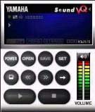
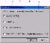
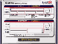

《电脑报》1999年39期《软件世界》介绍了VQF音乐格式，并比较了几种播放工具。目前，这种格式的音乐还比较少，但由于压缩比很大，许多收集音乐的朋友可以尝试使用该种音乐格式保存音乐。
图1就是YAMAHA出的VQF播放器，叫Sound VQ Player，它的样式比WinAmp稍微逊色了一点，下面我来介绍一下它的主要具体使用技巧。首先点击“Set”键，出现图2所示的设置窗口，其中：1主体设置；2代理服务器设置；3网络设置；4播放精确设置；5浏览器设置。再点击“Open”打开文件，在这里你既可以播放本地硬盘上的音乐，也可以听网上的音乐，使用比较简单。
YAMAHA的压缩器（YAMAHA Sound VQ ENCODER）可以说是很漂亮的了，其外观极具立体感（图3），当然功能也很多。它可以把WAV、PCM、AIF、AIFF格式的文件全部压缩成VQF格式的文件，而且压缩比特别高，音质也不错。我在自己的赛扬机器上把同一张CD分别用MP3和VQF进行压缩，结果令人咋舌。用MP3的压缩后的文件达到了74M，而VQF只用了23M(两种格式都是44,100Hz，16位，立体声)，由此可见，YAMAHA公司在这方面下了很大的功夫。在这里我要提醒大家的是使用YAMAHA
Sound VQ ENCODER压缩文件时必需输入音乐的版权信息，否则它是不会工作的。另外，压缩器和播放器不同的是，它需要注册，不然的话只能用90天（不过这也足够了）。
大体情况就是这样了，其他功能大家自己试试看吧。差点忘了，它们的下载地址是http://www.cyber－bp.or.jp/yamaha/SoundVQ/vqp251ble.exe和http://www.cyber－bp.orjp/yamaha/SoundVQ/vqe254b5e.exe，大小都是14M。
(安徽 孙馨) |